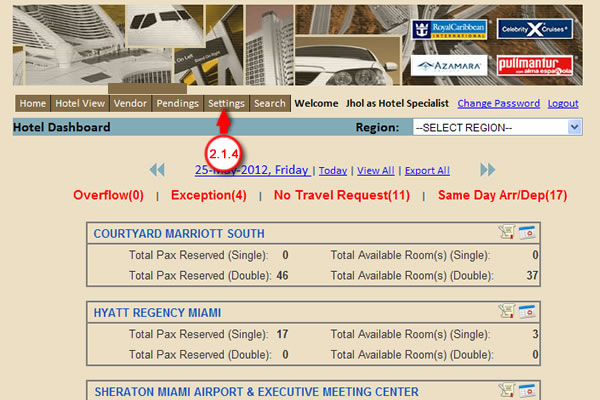
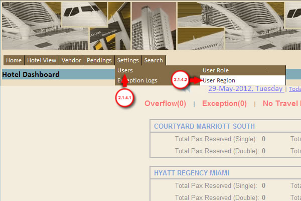
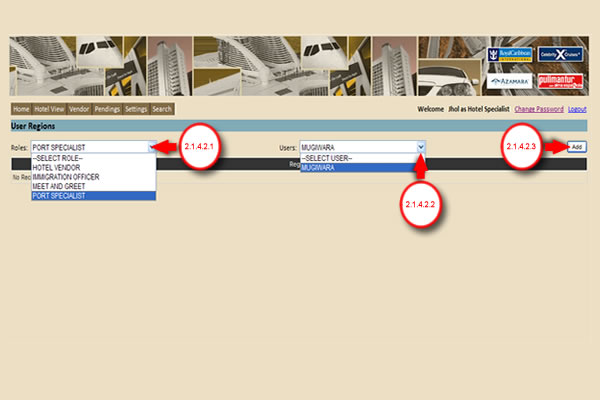
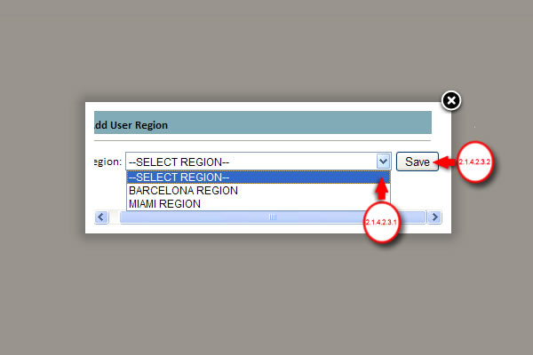
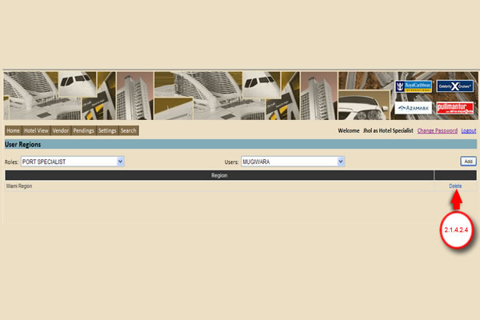

2.1.4 Under Homepage, Point the mouse cursor to Settings Tab.

2.1.4.1 Under Settings tab, Point the mouse cursor to Users.
2.1.4.2 Select the User Region.

2.1.4.2.1 Select user's role to display users on the Users drop-down box.
2.1.4.2.2 Select the User you want to assign a region from the the Users drop-down box.
2.1.4.2.3 Click the Add button to select a Region.

2.1.4.2.3.1 Select region from the Region drop-down box.
2.1.4.2.3.2 Click the Save button to add selected region to the user.

2.1.4.2.4 Click the Delete Button to Delete User region.
Created with the Personal Edition of HelpNDoc: Full featured Help generator